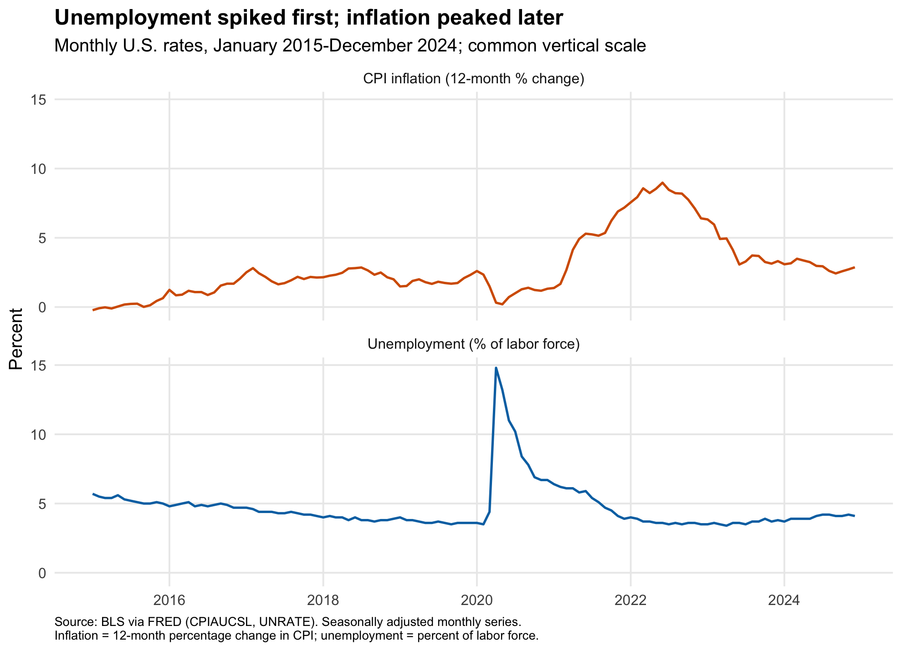
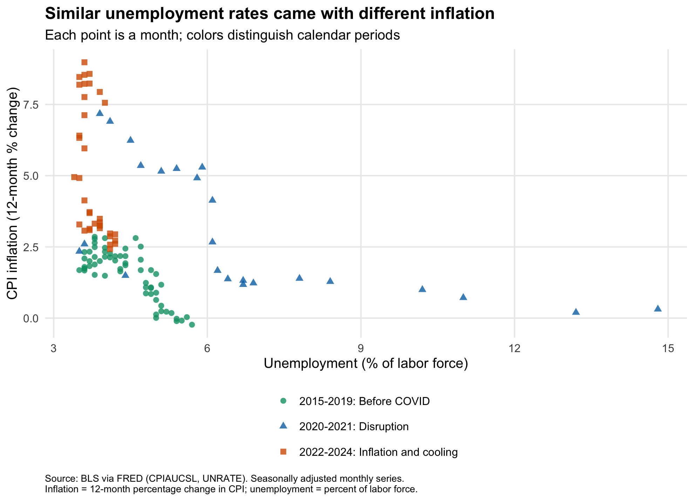
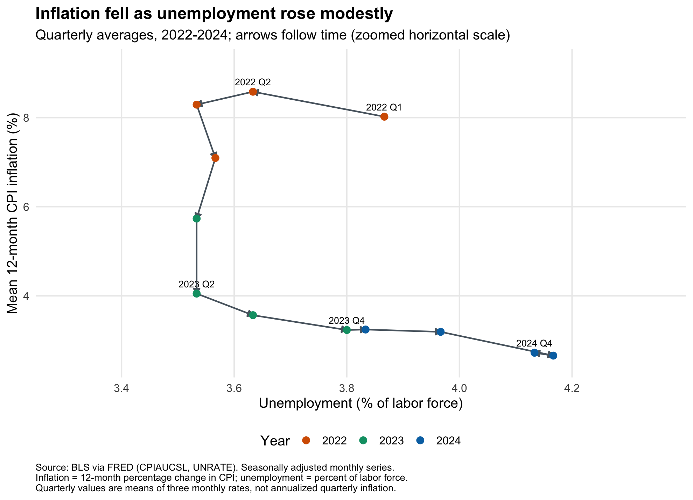

In 2022, bringing inflation down raised an uncomfortable question. Would relief at the checkout come at the cost of more people losing work? Some prominent economists warned of a substantial rise in unemployment, while others thought inflation could ease without a painful recession. For households already struggling with rising bills, the possibility of losing a paycheck made the stakes especially high.
That debate makes the subsequent experience worth examining. Did the fall in U.S. inflation after 2022 come with a large rise in unemployment? And did that rise happen throughout the slowdown in inflation, or mainly toward the end?
One reason to expect a tradeoff is that strong spending can encourage hiring while also pushing prices up. Slowing spending could ease price pressure but weaken hiring. This is one idea behind the Phillips curve. It is a possibility to investigate, not a rule that the two rates must always follow.
Inflation measures how much prices increased compared with the same month a year earlier. Unemployment measures the share of people working or seeking work who have no job and are looking for one. Falling inflation means prices rise more slowly, not that prices fall.
The first chart shows why timing matters. Inflation peaked at 9.0% in June 2022 and fell sharply afterward. From that peak to December 2024, unemployment rose by 0.5 percentage points.
That comparison misses an important turn along the way. Unemployment initially continued falling, reaching its low in April 2023. From that low to December 2024, it rose 0.7 points. Measuring from peak inflation therefore gives a smaller increase than measuring from the later unemployment low. The starting date changes how much weakening we see.
Was this simply a predictable exchange between inflation and jobs? The second chart checks whether similar unemployment consistently came with similar inflation. Each point represents one month, grouped into 2015 through 2019 before COVID, the disruption in 2020 and 2021, and the inflation and cooling period from 2022 through 2024.

Unemployment was 3.6% in December 2019 and 3.6% in June 2022. Yet inflation was 2.3% in the first month and 9.0% in the second. Similar unemployment accompanied very different inflation. Unemployment alone does not explain the price pressures households faced.
The final chart returns to the recent episode and connects the observations in time. Each point averages three months to make the path easier to follow. Moving downward means inflation fell; moving right means unemployment rose. Its unemployment axis is narrower than the previous chart’s, so distances should not be compared across the two figures.

Much of the initial movement was downward. From 2022 Q2 to 2023 Q2, inflation fell from 8.6% to 4.1%, while unemployment stayed close to 3.5%.
Afterward, the path moved more clearly to the right. By 2024 Q4, unemployment averaged 4.1% and inflation 2.7%. The broad contrast matters more than movements of a tenth of a point, since estimates from a sample of households can fluctuate even without a real change in unemployment.
The episode does not show a fixed exchange in which each point of lower inflation requires an equal rise in unemployment. It also does not establish that reducing inflation is always painless. The availability of goods, spending, expectations about future prices, and policy can all affect these outcomes. These charts cannot isolate the effects of a particular policy, and national averages conceal different experiences across households.
The main takeaways are:
- Much of the fall in inflation came before the clearer rise in unemployment.
- Unemployment rose by 0.5 percentage points from peak inflation, or 0.7 points from its subsequent low. The starting date matters.
- Similar unemployment came with very different inflation, so unemployment alone does not explain price pressure.
Data come from BLS via FRED’s consumer price index and unemployment rate. The GitHub repository contains the data, code, methods, and instructions for reproducing the analysis.